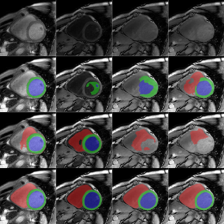
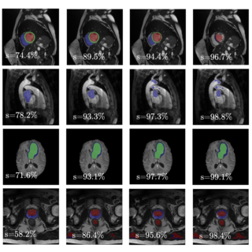

|
Tony Yang I'm a Ph.D. candidate at IMDEA Networks Institute, where I work with Joerg Widmer conducting research within the MSCA 6th Sense Project focusing on designing efficient wireless sensing systems for human/obstacle detection and tracking. Prior, I completed my Master's in Computer and Embedded Systems Engineering at TU Delft, where I worked with Guohao Lan and Xucong Zhang on immersive emotion recognition systems based on eye-tracking technology. I have also worked as a full-time AI research engineer at ImPhys TU Delft, where I optimized AI models for medical imaging through advanced pruning techniques. Personal Email / Work Email / CV / Scholar / Github |
{kind=link}
ResearchMy interests drive by a passion for integrating AI, embedded systems, wearable devices, etc. to create impactful, human-centered innovations. Some papers are highlighted. |

|
Through the Eyes of Emotion: A Multi-faceted Eye Tracking Dataset
for Emotion Recognition in Virtual Reality
Tongyun Yang†, Bishwas Regmi†, Lingyu Du, Andreas Bulling, Xucong Zhang, Guohao Lan IMWUT/Ubicomp, 2025 (To appear) arXiv / code An eye-tracking dataset in VR, combining high-frame-rate periocular videos and high-frequency gaze data to enable accurate, multimodal emotion recognition. |
|

|
Reverse Imaging: Any-Sequence Generalization for Cardiac MRI Segmentation
Yidong Zhao, Yi Zhang, Tongyun Yang, Maša Božić-Iven, Ayda Arami, Yuchi Han, Orlando Simonetti, Hui Xue, Petter Kellman, Sebastian Weingärtner, Qian Tao, MICCAI & IEEE Transactions on Medical Imaging, 2025 (To appear) arXiv A physics-driven framework that estimates tissue properties (M0, T1, T2) from annotated cardiac MRI images using diffusion models, enabling physics-based synthesis of diverse unseen sequences for zero-shot generalization of segmentation models across different MRI contrasts. |
|

|
Pruning nnU-Net with Minimal Performance Loss]{Pruning nnU-Net with Minimal Performance Loss
Tongyun Yang, Yidong Zhao, Qian Tao, MIDL, 2025 arXiv / code Trained nnU-Net models contain substantial weight redundancy, with over 80% of weights removable through simple magnitude-based pruning while maintaining same performance across multiple medical segmentation tasks. |
Miscellanea |
|
Website adopted from Jon Barron |